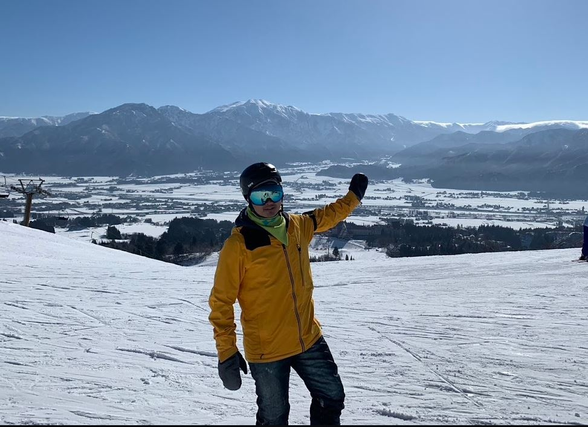

A LIFE BETWEEN MOUNTAINS
把日常
留在山下。
追著雪走，也找回自己的節奏。
這裡收藏我的單板生活，和那些值得再去一次的山。
Sam ChenDEVELOPER / SNOWBOARDER
THE MOUNTAINS ARE CALLING01 / SNOW LIFE
在每一道雪痕裡
留下自己的故事。
留下自己的故事。
36座雪場留下足跡
4個國家的冬日風景
2008—2026一路滑向下一座山
MORE THAN A HOBBY.
IT'S A WAY OF LIFE.
01 / SNOW JOURNAL
雪上的片刻，
日常裡的自由。
有粉雪、有朋友，還有每次出發的期待。
用影像記下，讓冬天的故事繼續。

OFFLINE IS MY FAVORITE MODE.02 / THE PERSON BEHIND THE BOARD
寫程式，
也寫自己的雪道。
我是 Sam Chen，一個熱愛單板滑雪的程式設計師。從日本的粉雪到更遠的山脈，每趟旅行都是一次重新充電。
專注技術，馭雪如程；邁向高峰，不止於山。山下持續學習，山上享受當下。
在 Instagram 找到我03 / COLLECTED MOMENTS